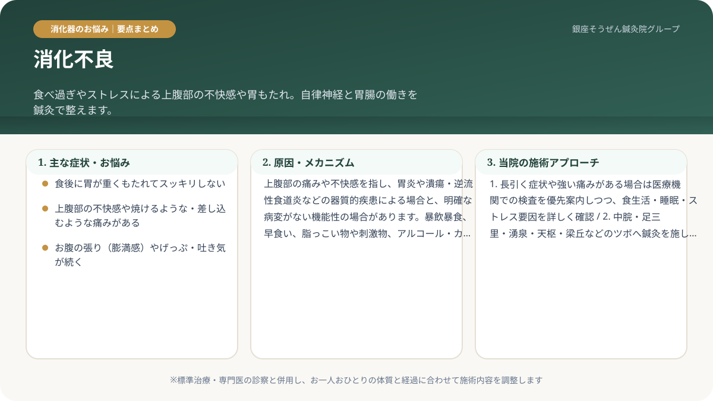

消化不良の鍼灸
食べ過ぎやストレスによる上腹部の不快感や胃もたれ。自律神経と胃腸の働きを鍼灸で整えます。
まず知っておきたい要点と改善の流れ

上腹部の痛みや不快感を指し、胃炎や潰瘍・逆流性食道炎などの器質的疾患による場合と、明確な病変がない機能性の場合があります。暴飲暴食、早食い、脂っこい物や刺激物、アルコール・カフェイン・喫煙に加え、過労やストレス、睡眠不足で自律神経が乱れ、消化を担う副交感神経の働きが低下することが大きな原因となります。
このようなお悩みはありませんか？
- ✓食後に胃が重くもたれてスッキリしない
- ✓上腹部の不快感や焼けるような・差し込むような痛みがある
- ✓お腹の張り（膨満感）やげっぷ・吐き気が続く
- ✓食欲不振とともに便秘や下痢を繰り返す
当院の施術アプローチ・改善の流れ
なぜ鍼灸で改善へ向かうのか？（作用機序の図解）
消化不良に対する鍼灸は、脳腸相関と迷走神経反射による胃腸運動の調整機序を通じて、お体本来の回復力を引き出します。

胃腸機能と深く結びつく四肢・腹部の経穴を刺激し、体性感覚神経から中枢へ信号を送ります。
脳幹を経由した体性-内臓反射により、副交感神経（迷走神経）経由で胃腸の働きを調整します。
弱まったぜん動を促す一方、下痢型の過剰な収縮や内臓知覚過敏は穏やかに鎮静します。
ストレスで乱れにくい胃腸の土台を整え、胃もたれ・便通異常・吐き気の軽減を目指します。
院長YouTube解説・関連動画
消化不良は誰にでも起こる
消化不良は、胃炎や胃潰瘍、胃酸の逆流などの病気が原因となって起こることもあります。しかし、はっきりとした原因が見つからず、機能性消化不良と判断されることも多くあります。
これはストレスや暴飲暴食、ピロリ菌への感染など様々な原因が複合的に合わさって起こる症状です。ピロリ菌が原因となった機能性消化不良以外は生活習慣の改善が重要です。
日本人に多い胃に起こる症状の１つは消化不良です。消化不良は、みおぞちのあたりに起こる痛みや不快感のことです。痛みは続くこともありますが、現れたり消えたりと繰り返し起こることもあります。
消化不良は性別や年齢に関係なく誰にでも起こる症状です。いつかのタイミングで４人に１人は消化不良の症状を感じることがあると言われています。一般的に消化不良は、なんとなく感じる程度の軽度の不快感です。
長い期間続いたり、現れたり消えたりしたりするものでなければ、放っておく人が多いです。突然消化不良が起き、急性の感覚のこともあります。
消化不良の症状は不快感、痛み
消化不良では、上腹部に痛みを感じたり不快感を感じたりします。その不快感や痛みを表現するときには、ガスがたまった感じ、膨満感、差し込むような痛み、焼けつくような痛みという言葉を使うことも多いです。
膨満感は、少しの量の食事後に起きることも、いつもと変わらない普通の量の食事の後に強く起こることも、食事に関係なく起こることもあります。消化不良の症状は色々とあります。
主に胃の痛みや胃の不快感、膨満感、胸焼け、吐き気、嘔吐、げっぷなどが症状として現れることが多いです。このような症状が長く続く場合は一度医師と相談することをお勧めします。
消化不良の原因によっては、食欲不振や吐き気、便秘、下痢、鼓腸、げっぷなどの他の症状があることもあります。
また、食事によって症状が悪化することもあります。反対に食事によって症状が軽くなることもあります。消化不良が起きても、必ずすぐに病院に行かなくてはいけないことはありません。しかし、状態によっては病院に行かなくてはいけないこともあります。
消化不良の原因はいろいろある
消化不良の原因は色々あります。１つ目は生活習慣です。暴飲暴食をしたり、にんにくや唐辛子などの刺激の強い食べ物や脂肪の多い食べ物を食べすぎたりアルコールや炭酸飲料の飲み過ぎたりすると、胃酸の分泌が乱れ、消化酵素を分泌するすい臓の働きが低下します。
すると、消化不良が起こりやすい状態になります。早食いも消化不良の原因です。早食いでは、食べ物が噛み砕かれないまま胃に運ばれてしまうため、消化に時間がかかります。そのため、消化不良が起こるのです。
過労やストレスも消化不良の原因です。過労やストレスによって自律神経のバランスが乱れ、胃腸機能の低下が起こります。そのため、消化不良につながるのです。
睡眠不足や過度な仕事量などのよって、疲れがたまり体力が落ちると、免疫力も落ちます。すると、細菌やウイルスへの感染も起きやすいです。風邪やインフルエンザは下痢などの胃腸に対しての症状も起こすことがあるため、消化不良が起きることがあります。
カフェインの摂りすぎやタバコの吸いすぎも胃の粘膜に刺激を与えるもののため、消化不良の原因です。
２つ目は、消化不良を伴う病気です。胃下垂や胃腸虚弱、吸収不良症候群、慢性胃炎など急性胃炎、機能性ディスペプシアが主に消化不良を起こす病気です。
急性胃炎は、暴飲暴食や薬の副作用などが原因で急激に胃の粘膜にただれや出血などの症状を起こします。慢性胃炎では、長い期間胃炎が続きます。ヘリコバクター・ピロリ菌の感染が原因の１つであると言われています。
慢性胃炎では、多くの人に胃の不快感や食欲不振などの症状が現れます。食べものを消化吸収する機能が低下する病気をまとめて吸収不良性症候群と言います。胃や十二指腸、小腸、膵臓、肝臓、胆道などの消化や吸収にかかわる臓器に異常が起こり、栄養がきちんと吸収されないことが原因となり、下痢や体重減少、倦怠感が起きます。
さらに、栄養不足が原因でその他にもいろいろな症状が起こります。
消化不良の改善には、生活習慣の改善が重要です。暴飲暴食をしてしまった時や刺激物を摂りすぎてしまったときは、お酒を控えて胃に優しい食事をすることが大切です。
脂肪分が多い食べ物や刺激の強い食べ物は避け、消化によいものを食べて胃を休めるように心がけてください。ゆっくりよくかんで胃に負担をかけないように配慮して食事を摂ることが必要です。
副交感神経が優位のとき、胃腸はよく働きます。ストレスをきちんと解消し、規則正しい生活を送ることが大切なのです。十分な睡眠や栄養のある食事をすることによって、自律神経のバランスを整えるように心がけましょう。
また、タバコも避けた方が良いです。様々な面から見てもタバコは減らすのではなく、禁煙することをお勧めします。
消化不良の改善には、原因となっている基礎疾患の改善も重要です。思い当たる基礎疾患があれば改善に励み、特定できる病気がない場合は経過観察を続けて安心を感じることでストレスも軽減します。
特定の病気がないと考えられる場合、病院ではプロトンポンプ阻害薬やヒスタミンH2受容体拮抗薬などの胃酸分泌抑制薬や胃の粘液量を増やすことで潰瘍を改善する細胞保護剤を使った改善方法をとることが多いです。
その他にも消化管の筋肉の動きを促進する消化管運動機能改善薬やメトクロプラミドやエリスロマイシンなどの薬を使うこともあります。ストレスなどが原因で消化不良を起こしている場合など、人に抗うつ薬を使うこともあります。
胃が荒れた状態が長期で続いた場合、急性胃炎や胃・十二指腸潰瘍を起こすこともあります。さらに、急性胃炎になった後も胃を荒らすような生活習慣が続いて胃に刺激があると慢性胃炎を起こす可能性もあります。
消化不良は、胃から送られたSOS信号です。時間がたてば治る、良くならなくても市販の胃薬をとりあいず飲み続けるなどという状態が続くと、症状が悪化することも良くあります。
何となく調子が悪いと感じるくらいの症状でも長い期間にわたって症状が続くときは、医師に相談して、適切な改善方法をとることが必要です。胃からのSOSがあった場合、できるだけ早く本質を改善することが重要です。
体のためには、胃が疲れないように生活習慣を正すことが１番大切です。暴飲暴食を避けたり、ストレスを上手に発散したり、胃の疲労につながる原因となることを避けて、生活することを心がけてください。
ツボの位置と押し方
中脘は、へそとみぞおちを結ぶ縦線の、中間のあたりにあります。
押すときは３〜５秒かけてゆっくりと軽く押します。押すタイミングでは、満腹時は避けるようにしましょう。
足三里は、膝のお皿のすぐ下にあります。ツボを探すときは、膝のお皿の外側のくぼみに人さし指を置いて、指幅4本そろえて小指があたっているところにあると考えると探しやすいです。
押すときは、指でゆっくり押します。他にも、脛から足三里まで、下から上に向かってかかとでこするように押酢方法もおすすめです。
湧泉は、足の裏にあります。 探すときは、足の指を足底側に曲げ、足の裏に人の字を作ります。その交わった点にできるへこみであると覚えると探しやすいです。
押すときは、 両手の親指を重ねてツボに当てて残りの指を足の甲に添え、足先のほうに押し出すように押します。 ゴルフボールを足の裏で踏んで転がし、ツボを刺激することもおすすめの方法です。
胃腸・逆流性食道炎・機能性ディスペプシアのツボ図解
実際の施術ではお一人おひとりの体質・症状に合わせて選穴しますが、胃食道逆流症（GERD）・機能性ディスペプシア・胃痛・吐き気ケアの臨床でよく用いられる代表的なツボの目安です。

📌 代表的なツボの詳細一覧表を開く（6穴） ▼
| ツボ名 | 位置の目安 | 主な狙い | セルフケアの注意点 |
|---|---|---|---|
| 巨闕（こけつ） | みぞおちの骨のすぐ下 | 胸やけ・みぞおちのつかえ感・横隔膜の緊張緩和 | 食後すぐの強い圧迫は逆流を招くため避けます。 |
| 中脘（ちゅうかん） | みぞおちとおへその真ん中 | 胃もたれ・早期膨満感・胃排出能サポート | 温めながらゆっくり腹式呼吸を行うと緩みます。 |
| 天枢（てんすう） | おへその左右それぞれ指3本分外側 | 消化管全体の蠕動バランス・お腹の張り軽減 | お腹が冷えやすい方は温灸がおすすめです。 |
| 内関（ないかん） | 手首の横ジワから指3本分肘寄りの中央 | 吐き気・胃酸逆流に伴う不快感・下部食道括約筋の調整 | 胃カメラ等の検査前後のセルフケアにも有用です。 |
| 足三里（あしさんり） | 膝の下外側、指4本分下 | 迷走神経を介した胃腸運動調整の最重要穴 | 毎日続けやすい胃腸の養生穴です。 |
| 公孫（こうそん） | 土踏まずの縁、親指の付け根からかかと寄り | 胃痛・胃もたれ・自律神経性の胃腸不調ケア | 内関と組み合わせて優しく押します。 |
国際査読論文の科学的エビデンス
国際的な医学データベース（PubMed・Cochrane等）で報告されている胃食道逆流症（GERD）・機能性ディスペプシア・胃痛・吐き気ケア領域の代表的な査読済み鍼灸研究をまとめています（標準治療との併用や研究上の限界を含めて正確に掲載）。
📚 査読論文データ・PubMed出典リンクを開く（4件） ▼
| 年・研究デザイン | 対象・規模 | 主な結果 | 限界・出典 |
|---|---|---|---|
| 2016年 大規模多施設RCT | 慢性重症機能性便秘 1,075名（15病院） | 週平均完全自発排便回数が電鍼+1.76 vs シャム+0.87（P<0.001）、20週追跡時も持続（P<0.001）。 | 20週以降の長期経過は未評価。 Ann Intern Med (PMID: 27618593) |
| 2020年 多施設RCT | 機能性ディスペプシア（PDS）278名（5施設） | 4週時点の総合改善反応率83.0% vs シャム51.6%（P<0.001）、終了後12週間維持。 | 16週脱落率18%・施術者盲検化不可。 Ann Intern Med (PMID: 32422066) |
| 2025年 多施設RCT | 下痢型過敏性腸症候群（IBS-D）280名（6病院） | 6週時点の複合反応率57.9% vs シャム41.4%（RR 1.40, P=0.008）、重篤な有害事象なし。 | IBS-D限定・中国多施設試験。 Gastroenterology (PMID: 40441496) |
| 2017年 メタ解析 | 胃食道逆流症（GERD）12 RCTs（n=1,235） | 鍼＋西洋薬併用は西洋薬単独より総合改善優位（RR 1.17, p=0.03）、再発率低下（RR 0.42, p<0.001）。 | 組入れ試験の質が低く標準治療との併用が前提。 Acupunct Med (PMID: 28689187) |
参考文献・出典
- 2016年 大規模多施設RCT（慢性重症機能性便秘 1,075名（15病院））— Ann Intern Med (PMID: 27618593)
- 2020年 多施設RCT（機能性ディスペプシア（PDS）278名（5施設））— Ann Intern Med (PMID: 32422066)
- 2025年 多施設RCT（下痢型過敏性腸症候群（IBS-D）280名（6病院））— Gastroenterology (PMID: 40441496)
- 2017年 メタ解析（胃食道逆流症（GERD）12 RCTs（n=1,235））— Acupunct Med (PMID: 28689187)
よくある質問（FAQ）
Q. 病院を受診した方がよい目安はありますか？▼
Q. ストレスによる胃もたれにも鍼灸は向いていますか？▼
あわせて読まれる関連疾患（消化器のお悩み）
椎体・肛門・気管食道・橈骨・腎の複数徴候を合併する先天性疾患。専門医管理下で筋緊張や疲労を補完します。
キノホルムによる薬害で生じた神経障害（新規発症なし）。専門医管理下で慢性期のしびれや筋緊張を補完ケアします。
飲酒が主因でない脂肪肝に炎症・線維化が加わった状態。食事と運動での減量を軸に、倦怠感や生活リズムの乱れを鍼灸で支えます。
長期の過剰飲酒で脂肪肝から肝炎・肝硬変へ進む肝障害。専門医管理と禁酒を基本に疲労や自律神経を整えます。
胃の一部が横隔膜の食道裂孔から上方へ飛び出す状態。医療機関での管理と並行し背部緊張や自律神経を整えます。
ガストリノーマによる胃酸過剰で難治性潰瘍を起こす疾患。専門医の治療を第一に、体調・自律神経を補完します。
CLINICAL RECOVERY CASES
✨ 実際の臨床改善事例・回復経過を見る
銀座本院をはじめ各院での実際の改善事例を症状別に絞り込んでご確認いただけます。
おひとりで悩まず、まずはご相談ください
銀座本院・川口・大宮・横浜・博多・田無の各院でご予約を承っております。